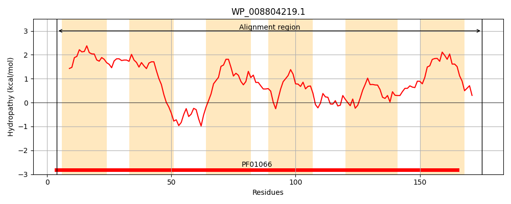
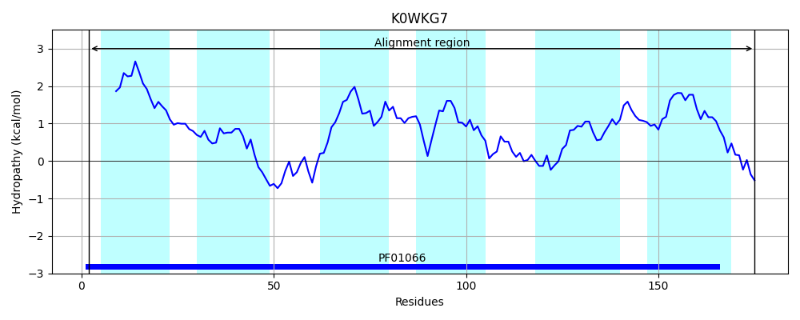
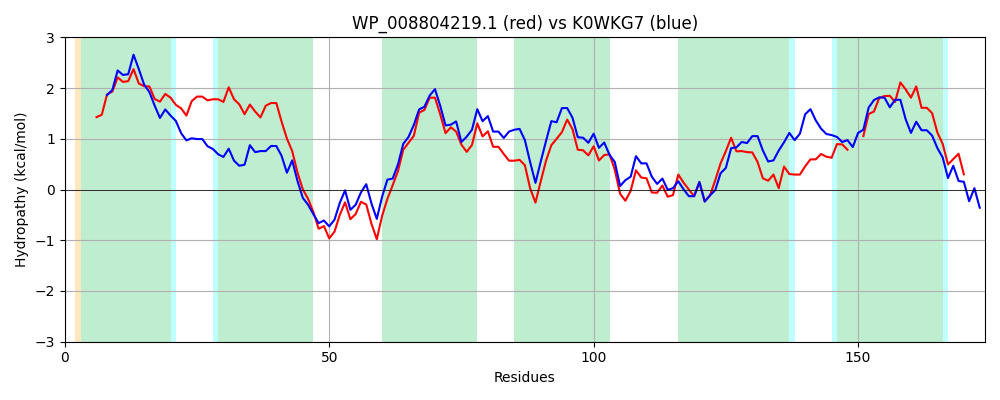

Hit Accession: K0WKG7
Hit TCID: 4.F.1.1.8
Hit Description: gnl|BL_ORD_ID|5559 gnl|TC-DB|K0WKG7|4.F.1.1.8 CDP-diacylglycerol--glycerol-3-phosphate 3-phosphatidyltransferase OS=Pseudomonas fluorescens R124 GN=I1A_002902 PE=3 SV=1
Mach Len: 174
e:0.000000
Query TMS Count : 6
Hit TMS Count: 6
TMS-Overlap Score: 5.800000
Predicted Substrates:CHEBI:7793;phosphate(3-)
BLAST Alignment:
Score: 532 , Bit scores: 209 bits, E-value: 8.8e-70, Alignment length: 174, Percentage identity: 60
Query: 4 NIPTLLTLFRVILIPFFVLAFYLPFSWAPFACALIFFVAAVTDWFDGFLARRWNQSTRFGAFLDPVADKVMVAIAMVLVAEHYHTWWVTLPAATMIAREIIISALREWMAELGKRSSVAVSWIGKVKTTAQMAALVWMLWRPYPWVEWA--GIALFLVAAVLTLWSMLQYLNAA 175
NIP L+T+ RV+LIP F+L FYLP+ W+ A A +F AA TDW DG+LARR QST FGAFLDPVADK+MVA+A+VL+ + + W+TLPAA +I REI++SALREWMAELG R+ VAVS +GK KT AQM ALV +L P + W G AL +++A LTLWSM+QYL AA
Sbjct: 2 NIPNLITVLRVLLIPIFILLFYLPYQWSYMASASVFAFAAATDWLDGYLARRLEQSTPFGAFLDPVADKLMVAVALVLLVQEHGNLWLTLPAAVIIGREIVVSALREWMAELGARAHVAVSNLGKWKTAAQMLALVILLANPRDFSFWVLLGYALLMISAGLTLWSMVQYLRAA 175 | Protein Hydropathy Plots: |
|---|
|  |  |
Pairwise Alignment-Hydropathy Plot:
|
|---|
|  |